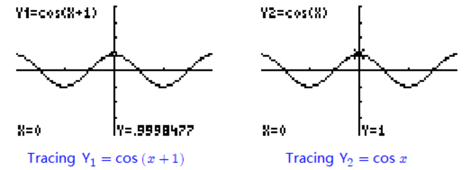
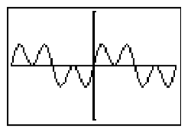

Section 5.3 Trigonometric Identities
Subsection What is an Identity?
Recall that an equation may be true or false, depending on the values of any variables involved. For example, the equation
\begin{equation*}
x^2 + 3x =10
\end{equation*}
is true only if \(x = 2\) or \(x = 5\text{.}\) An equation that is true only for certain values of the variable, and false for others, is called a conditional equation. When you solve a conditional equation, you are finding the values of the variable that make the equation true.
Some equations are true for all legitimate values of the variables. Such equations are called identities. Here are some examples of identities.
\begin{align*}
3(x + y) \amp =3x + 3y\\
(x + 1)^2 \amp = x^2 + 2x + 1
\end{align*}
In an identity, the expressions on either side of the equal sign are equivalent expressions, because they have the same value for all values of the variable. When we simplify an algebraic expression, we are in fact creating an identity.
Identity.
An identity is an equation that is true for all legitimate values of the variables.
Example 5.42.
Which of the following equations are identities?
\(\displaystyle 3s + 7s = 10s\)
\(\displaystyle 5c(c - 2s) = 5c^2 - 10cs\)
\(\displaystyle 2t - 1 = 3\)
Solution.
Many of the algebraic operations you have already learned, such as combining like terms or applying the distributive law, produce equivalent expressions.
Equation (a) is an identity obtained by combining like terms on the left side.
Equation (b) is an identity obtained by applying the distributive law on the left side.
Equation (c) is not an identity, because the equation is true only for \(t = 2\text{.}\)
Checkpoint 5.43.
Which of the following equations are identities?
\(\displaystyle (c - s)(c + s) = c^2 - s^2\)
\(\displaystyle 3t^2 = 1\)
\(\displaystyle (2c + 1) + (s - 3) = 2c + s - 2\)
Of course, you wouldn’t be asked to solve an identity, because all values of the variable are solutions. Instead, we use identities to replace one form of an expression by a more useful form. You do this when you solve a quadratic equation by factoring. For example,
\begin{align*}
2x^2 - x - 1 \amp = 0 \amp \amp \blert{\text{Factor the left side.}}\\
(2x+ 1)(x - 1) \amp = 0
\end{align*}
Because \((2x+ 1)(x - 1)\) is equivalent to \(2x^2 - x - 1\text{,}\) we have not changed the equation or its solutions. But now we can apply the Zero Factor principle and solve the equation.
Using identities is especially useful when we are working with trigonometric ratios.
Subsection Using Trigonometric Ratios in Identities
Because the identity
\begin{equation*}
2x^2 - x - 1 = (2x + 1)(x - 1)
\end{equation*}
is true for any value of \(x\text{,}\) it is true when \(x\) is replaced, for instance, by \(\cos (\theta)\text{.}\) This gives us a new identity
\begin{equation*}
2\cos^2 (\theta) - \cos (\theta) - 1 = \Big(2\cos (\theta) + 1\Big)\Big(\cos (\theta) - 1\Big)
\end{equation*}
Expressions involving \(\sin (\theta), \cos (\theta), \text{or} \tan (\theta)\) can be manipulated by the same rules (such as the distributive law or the laws of exponents) that we use with simple variables.
Example 5.44.
Which of the following equations are identities?
\(\displaystyle 3\sin (\theta) + 7\sin (\theta) = 10\sin (\theta)\)
\(\displaystyle 5\cos (\theta) \Big(\cos (\theta) - 2\sin (\theta)\Big) = 5\Big(\cos (\theta)\Big)^2 - 10 \cos (\theta)\sin (\theta)\)
\(\displaystyle 2\tan (\theta) - 1 = 3\)
Solution.
These equations are obtained from the equations in the previous Example by replacing the variable \(s\) with \(\sin (\theta)\text{,}\) the variable \(c\) with \(\cos (\theta)\text{,}\) and the variable \(t\) with \(\tan (\theta)\text{.}\) Equations (a) and (b) are identities, for the same reasons as before, and equation (c) is not. It is false, for example, when \(\theta = 0\text{.}\)
Checkpoint 5.45.
Which of the following equations are identities?
\(\displaystyle \Big(\cos (\theta) - \sin (\theta)\Big)\Big(\cos (\theta) + \sin (\theta)\Big) = \cos^2 (\theta) - \sin^2 (\theta)\)
\(\displaystyle 3\tan^2 (\theta) = 1\)
\(\displaystyle \Big(2\cos (\theta) + 1\Big) + \Big(\sin (\theta) - 3\Big) = 2\cos (\theta) + \sin (\theta) - 2\)
Subsection Checking Identities Graphically
Is the equation \(\sqrt{x^2} = x\) an identity? The answer is no! Even though the equation is true for all positive values of \(x\text{,}\) it is false for negative values of \(x\text{.}\) For example, if \(x = -3\text{,}\) then
\begin{equation*}
\sqrt{x^2} = \sqrt{(-3)^2} = \sqrt{9} = 3
\end{equation*}
so \(\sqrt{x^2} \not= x\text{.}\) Because the radical symbol \(\sqrt{}\) stands for the nonnegative square root, the left side of the equation, \(\sqrt{x^2}\text{,}\) is never negative. Therefore, \(\sqrt{x^2}\) cannot equal \(x\) when \(x\) is a negative number. The equation is false for \(x \lt 0\text{.}\)
One way to see that \(\sqrt{x^2}\) and \(x\) are not equivalent is to compare the graphs of \(Y_1 = \sqrt{x^2}\) and \(Y_2 = x\text{,}\) shown below. You can see that \(\sqrt{x^2}\) and \(x\) do not have the same value for \(x \lt 0\text{.}\)
Thus, to check to whether an equation is an identity, we can compare graphs of \(Y_1 = \) (left side of the equation) and \(Y_2 = \) (right side of the equation). If the two graphs are identical, the equation is an identity. If the two graphs are not the same, the equation is not an identity.
Example 5.47.
Which of the following equations are identities?
\(\displaystyle \sin (2\alpha) = 2\sin (\alpha)\)
\(\displaystyle \cos (x + 1) = \cos (x)\)
Solution.
-
Compare the graphs of \(Y_1 = \sin (2x)\) and \(Y_2 = 2\sin (x)\text{.}\) Enter the two equations in the ZTrig window and press ZOOM \(7\) to see the graphs shown below.
To help distinguish which graph is which, we can use the calculator’s trace feature, illustrated in the figure at right. Because there are two distinct graphs, the expressions \(\sin (2x)\) and \(2\sin (x)\) are not equivalent, and consequently \(\sin (2\alpha) = 2\sin (\alpha)\) is not an identity.
-
This time we graph \(Y_1 = \cos (x + 1)\) and \(Y_2 = \cos (x)\text{.}\) Although the graphs appear to be identical, when we use the trace feature we see that their \(y\)-values differ at \(x = 0\) (and at many other values of \(x\text{.}\)) See the figures below.

The graphs are so close together that calculator’s resolution does not distinguish them, but tracing the graphs reveals that they are not identical. Because the two graphs differ, the equation \(\cos (x + 1) = \cos (x)\) is not an identity.
Checkpoint 5.49.
Use graphs to decide which of the following equations are identities.
\(\displaystyle \cos (2\theta) = 2\cos (\theta)\)
\(\displaystyle \cos (2\theta) =\cos^2 (\theta) - \sin^2 (\theta)\)
\(\displaystyle \cos (\theta ^2) = \cos^2 (\theta)\)
Subsection Pythagorean Identity
All of the trigonometric functions are related. This is plausible when you think about it, because the three trig ratios all involve the three sides of a right triangle. Taking advantage of these relationships will simplify many calculations involving the trig functions.
We’ll begin by considering the relationship between \(\sin (\theta)\) and \(\cos (\theta)\text{.}\) Complete the following table with exact values.
| \(\theta\) |
\(\cos (\theta)\) |
\(\sin (\theta)\) |
\(\cos^2 (\theta)\) |
\(\sin^2 (\theta)\) |
\(\cos^2 (\theta) + \sin^2 (\theta)\) |
| \(0\degree\) |
\(\hphantom{0000}\) |
\(\hphantom{0000}\) |
\(\hphantom{0000}\) |
\(\hphantom{0000}\) |
\(\hphantom{0000}\) |
| \(30\degree\) |
\(\hphantom{0000}\) |
\(\hphantom{0000}\) |
\(\hphantom{0000}\) |
\(\hphantom{0000}\) |
\(\hphantom{0000}\) |
| \(45\degree\) |
\(\hphantom{0000}\) |
\(\hphantom{0000}\) |
\(\hphantom{0000}\) |
\(\hphantom{0000}\) |
\(\hphantom{0000}\) |
| \(60\degree\) |
\(\hphantom{0000}\) |
\(\hphantom{0000}\) |
\(\hphantom{0000}\) |
\(\hphantom{0000}\) |
\(\hphantom{0000}\) |
| \(90\degree\) |
\(\hphantom{0000}\) |
\(\hphantom{0000}\) |
\(\hphantom{0000}\) |
\(\hphantom{0000}\) |
\(\hphantom{0000}\) |
You should find that all the entries in the last column are 1.
For all of the angles in the table,
\begin{equation*}
\cos^2 (\theta) + \sin^2 (\theta) = 1
\end{equation*}
We can verify that this equation holds for all angles by graphing the expressions on either side of the equal sign. The graphs of these two functions in the ZTrig window are shown at right.
We see that the graph of \(Y_1 = \cos^2 (\theta) + \sin^2 (\theta)\) appears identical to the horizontal line \(Y_2 = 1\text{.}\) In fact, the graphs are identical, and the equation \(\cos^2 (\theta) + \sin^2 (\theta) = 1\) is an identity. It is important enough to earn a special name.
Pythagorean Identity.
For any angle \(\theta\text{,}\)
\begin{equation*}
\blert{\cos^2 (\theta) + \sin^2 (\theta) = 1}
\end{equation*}
As you might guess from its name, the Pythagorean identity is true because it is related to the Pythagorean theorem. We have not actually proved the identity, and a skeptical student may wonder if \(~~\cos^2 (\theta) + \sin^2 (\theta)~~\) is only very close to 1, or if it equals 1 for only some values of \(\theta\text{.}\) Homework Problem 77 offers a proof of the Pythagorean identity.
Example 5.50.
Evaluate \(~~\cos^2 (27\degree) + \sin^2 (27\degree)~~\) without using a calculator.
Solution.
Because the identity \(\cos^2 (\theta) + \sin^2 (\theta) = 1\) is true for any value of \(\theta\text{,}\) it is true in particular for \(\theta = 27\degree\text{.}\) So \(\cos^2 (27\degree) + \sin^2 (27\degree) = 1\text{.}\)
Checkpoint 5.51.
Evaluate \(~~5\Big(\cos^2 (12\degree) + \sin^2 (12\degree)\Big)~~\) without using a calculator.
When we solve more complicated trigonometric equations in later chapters, we will need to simplify trigonometric expressions so that they involve only one of the trig functions. The Pythagorean identity is useful when we wish to write an equivalent expression for either \(\cos^2 (\theta)\) or for \(\sin^2 (\theta)\text{.}\) Note that we can write the identity in two alternate forms:
Alternate Forms of the Pythagorean Identity.
\begin{align*}
\blert{\cos^2 (\theta)} \amp \blert{= 1 - \sin^2 (\theta)}\\
\blert{\sin^2 (\theta)} \amp \blert{= 1 - \cos^2 (\theta)}
\end{align*}
Example 5.52.
Rewrite \(\sin (\theta) \cos^2 (\theta)\) as an expression involving \(\sin (\theta)\) only.
Solution.
Using one of the alternate forms of the Pythagorean identity, we replace \(\cos^2(\theta)\) by \(1 - \sin^2 (\theta)\) to get
\begin{align*}
\sin (\theta) \alert{\cos^2 (\theta)} \amp = \sin (\theta) \alert{(1 - \sin^2 (\theta))} \amp \amp \blert{\text{Apply the distributive law.}}\\
\amp = \sin (\theta) - \sin^3 (\theta)
\end{align*}
In the previous Example, we have shown that
\begin{equation*}
\sin (\theta) \cos^2 (\theta) = \sin (\theta) - \sin^3 (\theta)
\end{equation*}
is an identity.
If we graph
\begin{align*}
Y_1 \amp = \sin (X) \cos^2 (X)\\
Y_2 \amp = \sin (X) - \sin^3 (X)
\end{align*}

for \(~-360\degree \le X \le 360\degree,~\) we see that they have the same graph, as shown in the figure.
Checkpoint 5.53.
Rewrite \(\sin^2 (\alpha) \cos^2 (\alpha)\) as an expression in \(\cos (\alpha)\text{.}\)
Verify your identity by graphing.
Answer.
\(\cos^2 (\alpha) - \cos^4 (\alpha)\)
Subsection Tangent Identity
There is also a relationship between the tangent ratio and the sine and cosine. Complete the following table with exact values. You should find that the entries in the last two columns are identical.
| \(\theta\) |
\(\cos (\theta)\) |
\(\sin (\theta)\) |
\(\dfrac{\sin (\theta)}{\cos (\theta)}\) |
\(\tan (\theta)\) |
| \(0\degree\) |
\(\hphantom{0000}\) |
\(\hphantom{0000}\) |
\(\hphantom{0000}\) |
\(\hphantom{0000}\) |
| \(30\degree\) |
\(\hphantom{0000}\) |
\(\hphantom{0000}\) |
\(\hphantom{0000}\) |
\(\hphantom{0000}\) |
| \(45\degree\) |
\(\hphantom{0000}\) |
\(\hphantom{0000}\) |
\(\hphantom{0000}\) |
\(\hphantom{0000}\) |
| \(60\degree\) |
\(\hphantom{0000}\) |
\(\hphantom{0000}\) |
\(\hphantom{0000}\) |
\(\hphantom{0000}\) |
For the angles in the table,
\begin{equation*}
\tan (\theta) = \dfrac{\sin (\theta)}{\cos (\theta)}
\end{equation*}
Because \(\cos (90\degree) = 0\text{,}\) the quotient \(\dfrac{\sin (\theta)}{\cos (\theta)}\) is undefined for \(\theta = 90\degree\text{,}\) and \(\tan 90\degree\) is undefined, too. The same is true for \(\theta = 270\degree\text{.}\) For all other angles between \(0\degree\) and \(360\degree\text{,}\) \(\tan (\theta) = \dfrac{\sin (\theta)}{\cos (\theta)}\text{.}\) A proof of the tangent identity is outlined in Homework Problem 78.
Tangent Identity.
For any angle not coterminal with \(90\degree\) or \(270\degree\text{,}\)
\begin{equation*}
\blert{\tan (\theta) = \dfrac{\sin (\theta)}{\cos (\theta)}}
\end{equation*}
Now we can see how to use identities to simplify trigonometric expressions. One strategy for simplifying a trigonometric expression is to reduce the number of different trig ratios involved. We can use the tangent identity to replace the tangent ratio by sines and cosines.
Example 5.54.
Simplify the expression \(~~\cos (\theta) \tan (\theta) + \sin (\theta)\text{.}\)
Solution.
We apply the tangent identity to replace \(~\tan (\theta)~\) by \(~\dfrac{\sin (\theta)}{\cos (\theta)}~\) and obtain
\begin{align*}
\cos (\theta) \alert{\tan (\theta)} + \sin (\theta) \amp = \cos (\theta) \Big(\alert{\dfrac{\sin (\theta)}{\cos (\theta)}}\Big) + \sin (\theta)\\
\amp = \sin (\theta) + \sin (\theta) = 2\sin (\theta)
\end{align*}
Checkpoint 5.55.
Simplify the expression \(~~\Big(1 + \tan^2 (x)\Big) \Big(1 - \cos^2 (x)\Big)\text{.}\)
Subsection Trig Ratios are Related
All three of the trigonometric functions of an angle are related. If we know the value of one of the three, we can calculate the other two (up to sign) by using the Pythagorean and tangent identities. We do not need to find the angle itself in order to do this. We need only know in which quadrant the angle lies to determine the correct sign for the trig ratios.
Example 5.56.
If \(~\sin (\theta) = \dfrac{7}{25}~\) and \(~90\degree \lt \theta \lt 180\degree~,\) find \(\cos (\theta)\) and \(\tan (\theta)\text{.}\)
Solution.
We substitute \(~\sin (\theta) = \dfrac{7}{25}~\) into the Pythagorean identity \(~\cos^2 (\theta) + \sin^2 (\theta) = 1~\) to get
\begin{align*}
\cos^2 (\theta) + \left(\dfrac{7}{25}\right)^2 \amp = 1 \amp \amp \blert{\text{Isolate } \cos^2 (\theta).}\\
\cos^2 (\theta) \amp = 1 - \left(\dfrac{7}{25}\right)^2 \amp \amp \textstyle{\blert{1 - \left(\frac{7}{25}\right)^2 = 1 - \frac{49}{625} = \frac{625-49}{625}}}\\
\cos^2 (\theta) \amp = \dfrac{576}{625} \amp \amp \blert{\text{Take square roots.}}\\
\cos \theta \amp = \pm \sqrt{\dfrac{576}{625}}\\
\amp = \pm \dfrac{24}{25}
\end{align*}
Because \(\theta\) is between \(90\degree\) and \(180\degree\text{,}\) \(\cos (\theta)\) must be negative, so \(\cos (\theta) = \dfrac{-24}{25}\text{.}\) To find \(\tan (\theta)\text{,}\) we use the tangent identity.
\begin{equation*}
\tan (\theta) = \dfrac{\sin (\theta)}{\cos (\theta)} = \dfrac{7/25}{-24/25} = \dfrac{-7}{24}
\end{equation*}
We can also work the previous Example by sketching an appropriate triangle. We begin by drawing an obtuse angle \(\theta\) and its reference triangle. Because \(\sin (\theta) = \dfrac{7}{25}\text{,}\) we can choose a point on the terminal side to have \(y\)-coordinate 7 and \(r = 25\text{,}\) as shown below. In order to calculate \(\cos (\theta)\) and \(\tan (\theta)\text{,}\) we must find the \(x\)-coordinate of the point. By the Pythagorean theorem,
\begin{align*}
x^2 + 7^2 \amp = 25^2 \amp \amp \blert{\text{Isolate } x^2.}\\
x^2 \amp = 576 \amp \amp \blert{\text{Take square roots.}}\\
x \amp = -24
\end{align*}
Note that \(x\) is negative because the point \((x,7)\) is in the second quadrant. Then
\begin{equation*}
\cos (\theta) = \dfrac {x}{r} = \dfrac{-24}{25}~~~~~~\text{and}~~~~~~\tan (\theta) = \dfrac {y}{x} = \dfrac{7}{-24} = \dfrac{-7}{24}
\end{equation*}
Checkpoint 5.57.
If \(~\cos (\theta) = \dfrac{5}{13}~\) and \(~-90\degree \lt \theta \lt 0\degree~,\) find \(\sin (\theta)\) and \(\tan (\theta)\text{.}\)
Find \(\sin (\theta)\) and \(\tan (\theta)\) by using an appropriate sketch.
Answer.
\(\sin (\theta) = \dfrac{-12}{13}\text{,}\) \(~ \tan (\theta) = \dfrac{-12}{5}\)
Subsection Solving Equations
Now we’ll see how identities are useful for solving trigonometric equations. So far we have only solved equations that involve a single trigonometric ratio. If the equation involves more than one trig function, we use identities to rewrite the equation in terms of a single trig function.
Example 5.58.
Solve \(~~\cos^2 (A) - \sin^2 (A) - \sin (A) = 0 ~~\) for \(0\degree \le A \le 360\degree\text{.}\)
Solution.
The equation involves both the cosine and sine functions, and we will rewrite the left side in terms of the sine only. To eliminate the cosines, we use the Pythagorean identity \(\cos^2 (A) = 1 - \sin^2 (A)\text{.}\)
\begin{align*}
\cos^2 (A) - \sin^2 (A) - \sin (A) \amp = 0 \amp \amp \blert{\text{Replace } \cos^2 (A) \text{ by } 1 - \sin^2 (A).}\\
(1 - \sin^2 (A)) - \sin^2 (A) - \sin (A) \amp = 0 \amp \amp \blert{\text{Combine like terms.}}\\
1 - 2\sin^2 (A) - \sin (A) \amp = 0 \amp \amp \blert{\text{Multiply both sides by }-1.}\\
2\sin^2 (A) + \sin (A) - 1 \amp = 0 \amp \amp \blert{\text{Factor the left side.}}\\
(2\sin (A) - 1)(\sin (A) + 1) \amp = 0
\end{align*}
Set each factor equal to zero to see that either \(\sin (A) = \frac{1}{2}\) or \(\sin (A) = -1\text{.}\) Now, \(\sin (A) = \frac{1}{2}\) when \(A = 30\degree\) or \(A = 150\degree\text{,}\) and \(\sin (A) = -1\) when \(A = 270\degree\text{.}\) The solutions are \(A = 30\degree,~A = 150\degree\text{,}\) or \(A = 270\degree\text{.}\)
Checkpoint 5.59.
Solve \(~~1 - \sin^2 (\theta) + \cos (\theta) = 0~~\) for \(0\degree \le\theta\le 360\degree\text{.}\)
Answer.
\(90\degree\text{,}\) \(~180\degree\text{,}\) \(~270\degree\)
Like the Pythagorean identity, the tangent identity can be helpful in solving trigonometric equations.
Example 5.60.
Solve \(~~\cos (B) + \sqrt{3} \sin (B) = 0~~\) for \(0\degree \le B \le 360\degree\text{.}\)
Solution.
We first try to write the equation in terms of a single trig function.
\begin{align*}
\sqrt{3} \sin (B) \amp = -\cos (B) \amp \amp \blert{\text{Divide both sides by } \cos (B) \text{ and } \sqrt{3}.}\\
\dfrac {\sin (B)} {\cos (B)} \amp = \dfrac{-1} {\sqrt{3}} \amp \amp \blert{\text{Apply the tangent identity.}}\\
\tan (B) \amp = \dfrac{-1} {\sqrt{3}}
\end{align*}
Because \(\tan (30\degree) = \dfrac{-1}{\sqrt{3}}\text{,}\) we see that \(B\) has a reference angle of \(30\degree\text{.}\) And because the tangent is negative in the second and fourth quadrants, we have \(B = 150\degree\) or \(B = 330\degree\text{,}\) as shown in the figure.
Checkpoint 5.61.
Solve \(~~2 \tan (\beta) \cos (\beta) - \sqrt{3} = 0~~\) for \(0\degree \le \beta \le 360\degree\text{.}\)
Answer.
\(60\degree\text{,}\) \(~ 120\degree\)
Subsection Proving Identities
When we show that one trigonometric expression is equivalent to another expression, we have proved a trigonometric identity. In a previous example we proved that the equation
\begin{equation*}
\cos (\theta) \tan (\theta) + \sin (\theta) = 2\sin (\theta)
\end{equation*}
is an identity; it is true for all values of \(\theta\text{.}\) A common strategy for proving an identity is to transform one side of the equation using equivalent expressions until it is identical to the other side. To help us choose the transformations at each step of the proof, we try to match the algebraic form of the final expression.
Example 5.62.
Prove the identity \(~~1 + \tan^2 (t) = \dfrac{1}{\cos^2 (t)}\)
Solution.
By manipulating the left side of the equation, we will show that the expression \(1 + \tan^2 (t)\) is equivalent to \(\dfrac{1}{\cos^2 (t)}\text{.}\) First, we use the tangent identity to write the expression in terms of sines and cosines:
\begin{equation*}
1 + \tan^2 (t) = 1 +\left(\dfrac{\sin (t)}{\cos (t)}\right)^2 = 1 + \dfrac{\sin^2 (t)}{\cos^2 (t)}
\end{equation*}
Next, we notice that the right side of the proposed identity has only one term, so we combine the terms on the left side. So that the fractions have the same denominator, we write 1 as \(\dfrac{\cos^2 (t)}{\cos^2 (t)}\text{.}\)
\begin{equation*}
\alert{1} + \dfrac{\sin^2 (t)}{\cos^2 (t)} = \alert{\dfrac{\cos^2 (t)}{\cos^2 (t)}} + \dfrac{\sin^2 (t)}{\cos^2 (t)} = \dfrac{\cos^2 (t) + \sin^2 (t)}{\cos^2 (t)}
\end{equation*}
Finally, we apply the Pythagorean identity to the numerator.
\begin{equation*}
\dfrac{\cos^2 (t) + \sin^2 (t)}{\cos^2 (t)} = \dfrac{1}{\cos^2 (t)}
\end{equation*}
Thus, \(1 + \tan^2 (t) = \dfrac{1}{\cos^2 (t)}\text{,}\) and the identity is proved.
When you write out the proof of an identity, you should transform the expression on one side of the identity into the expression on the other side, showing one step of the calculation on each line of your proof. You can provide a justification for each step to the right of the calculation. The proof of the identity in the previous example would look like this:
\begin{align*}
1 + \tan^2 (t) \amp = 1 +\left(\dfrac{\sin (t)}{\cos (t)}\right)^2 \amp \amp \blert{\text{Replace }\tan (t) \text{ by } \dfrac{\sin (t)}{\cos (t)}.}\\
\amp= 1 + \dfrac{\sin^2 (t)}{\cos^2 (t)}\amp\amp \blert{\text{Square the fraction.}} \\
\amp = \dfrac{\cos^2 (t)}{\cos^2 (t)} + \dfrac{\sin^2 (t)}{\cos^2 (t)} \amp \amp \blert{\text{Replace 1 by } \dfrac{\cos^2 (t)}{\cos^2 (t)}.}\\
\amp= \dfrac{\cos^2 (t) + \sin^2 (t)}{\cos^2 (t)}\amp \amp \blert{\text{Add fractions.}}\\
\amp = \dfrac{1}{\cos^2 (t)} \amp \amp \blert{\text{Apply Pythagorean identity.}}
\end{align*}
Checkpoint 5.63.
Prove the identity \(~~2\cos^2 (x) - 1 = 1 - 2\sin^2 (x)\)
Answer.
\(2 \cos^2 (x) - 1 = 2\Big(1 - \sin^2 (x)\Big) = 2 - 2\sin^2 (x) - 1 = 1 - 2\sin^2 (x)\)
Review the following skills you will need for this section.
Algebra Refresher 5.3.
Write each expression as a single fraction in simplest form.
\(\displaystyle \dfrac{1}{x} + \dfrac{1}{y}\)
\(\displaystyle 1 - \dfrac{1}{x}\)
\(\displaystyle \dfrac{1}{x - 1} + \dfrac{1}{x + 1}\)
\(\displaystyle x - \dfrac{x}{x + 1}\)
\(\displaystyle \dfrac{\dfrac{y}{x} - \dfrac{x}{y}}{\dfrac{y}{x} + 1}\)
\(\displaystyle \dfrac{1 - \dfrac{x^2}{y^2}}{1 + \dfrac{x^2}{y^2}}\)
\(\displaystyle \dfrac{\dfrac{2a}{x}}{1 - \dfrac{a^2}{x^2}}\)
\(\displaystyle \dfrac{\dfrac{a}{x} + \dfrac{b}{y}}{1 - \dfrac{ab}{xy}}\)
\(\underline{\qquad\qquad\qquad\qquad}\)
Algebra Refresher Answers
\(\displaystyle \dfrac{x + y}{xy}\)
\(\displaystyle \dfrac{x - 1}{x}\)
\(\displaystyle \dfrac{2x}{x^2 - 1}\)
\(\displaystyle \dfrac{x^2}{x + 1}\)
\(\displaystyle \dfrac{y - x}{y}\)
\(\displaystyle \dfrac{y^2 - x^2}{y^2 + x^2}\)
\(\displaystyle \dfrac{2ax}{x^2 - a^2}\)
\(\displaystyle \dfrac{ay + bx}{xy - ab}\)
Subsection Section 5.3 Summary
Subsubsection Vocabulary
Conditional equation
Identity
Equivalent expressions
Subsubsection Concepts
An equation that is true only for certain values of the variable, and false for others, is called a conditional equation. An equation that is true for all legitimate values of the variables is called an identity.
The expressions on either side of the equal sign in an identity are called equivalent expressions, because they have the same value for all values of the variable.
We often use identities to replace one form of an expression by a more useful form.
To check to whether an equation is an identity we can compare graphs of \(Y_1 = \) (left side of the equation) and \(Y_2 = \) (right side of the equation). If the two graphs agree, the equation is an identity. If the two graphs are not the same, the equation is not an identity.
Pythagorean Identity.
For any angle \(\theta\text{,}\)
\begin{equation*}
\cos^2 (\theta) + \sin^2 (\theta) = 1
\end{equation*}
Alternate forms:
\begin{align*}
\cos^2 (\theta) \amp = 1 - \sin^2 (\theta)\\
\sin^2 (\theta) \amp = 1 - \cos^2 (\theta)
\end{align*}
Tangent Identity.
For any angle not coterminal with \(90\degree\) or \(270\degree\text{,}\)
\begin{equation*}
\tan (\theta) = \dfrac{\sin (\theta)}{\cos (\theta)}
\end{equation*}
To solve an equation involving more than one trig function, we use identities to rewrite the equation in terms of a single trig function.
To prove an identity, we write one side of the equation in equivalent forms until it is identical to the other side of the equation.
Subsubsection Study Questions
What is the difference between a conditional equation and an identity? Give an example of each.
What happens when you try to "solve" an identity?
Explain how to use graphs to verify an identity.
Delbert claims that since \(\cos^2 (\theta) + \sin^2 (\theta) = 1\text{,}\) we can take the square root of both sides to get the simpler form \(\cos (\theta) + \sin (\theta) = 1\text{.}\) Is he correct? Why or why not?
If \(\dfrac{a}{b} = \dfrac{2}{5}\text{,}\) is it necessarily true that \(a = 2\) and \(b = 5\text{?}\) Explain. If \(\tan (\theta) = \dfrac{3}{11}\text{,}\) is it true that \(\sin (\theta) = 3\) and \(\cos (\theta) = 11\text{?}\)
Subsubsection Skills
Recognize identities #1–16, 41–46
Verify identities #17–26, 73–78
Rewrite expressions using identities #27–34, 47–50
Use identities to evaluate expressions #35–40
olve trigonometric equations #51–58, 67–72
Given one trig ratio, find the others #59–72
Exercises Homework 5.3
Exercise Group.
For Problems 1–8, decide which of the following equations are identities. Explain your reasoning.
1.
\(\left(\sqrt{a} + \sqrt{b}\right)^2 = a + b\)
2.
\(\sqrt{a^2 - b^2} = a - b\)
3.
\(\dfrac{1}{a + b} = \dfrac{1}{a} + \dfrac{1}{b}\)
4.
\(\dfrac{a + b}{a} = b\)
5.
\(\tan (\alpha + \beta) = \dfrac{\sin (\alpha + \beta)}{\cos (\alpha + \beta)}\)
6.
\(\dfrac{1}{\tan (\theta)} = \dfrac{\cos (\theta)}{\sin (\theta)}\)
7.
\(\Big(1 + \tan (\theta)\Big)^2 = 1 + \tan^2 (\theta)\)
8.
\(\sqrt{1 - \sin^2 (\phi)} = 1 - \sin (\phi)\)
Exercise Group.
For Problems 9–16, use graphs to decide which of the following equations are identities.
9.
\(\sin (2t) = 2 \sin (t)\)
10.
\(\cos (\theta) + \sin (\theta) = 1\)
11.
\(\sin (30\degree + \beta) = \dfrac{1}{2} + \sin (\beta)\)
12.
\(\cos (90\degree - C) = \sin C\)
13.
\(\tan (90\degree - \theta) = \dfrac{1}{\tan (\theta)}\)
14.
\(\tan (2\theta) = \dfrac{2\tan (\theta)}{1 - \tan^2 (\theta)}\)
15.
\(\dfrac{\tan^2 (x)}{1 + \tan^2 (x)} = \sin^2 (x)\)
16.
\(\tan (x) + \dfrac{1}{\tan (x)} = \sin (x) \cos (x)\)
Exercise Group.
For Problems 17–26, show that the equation is an identity by transforming the left side into the right side.
17.
\(\Big(1 + \sin (w)\Big) \Big(1 - \sin (w)\Big) = \cos^2 (w)\)
18.
\((\cos (\theta) - 1)(\cos (\theta) + 1) = -\sin^2 (\theta)\)
19.
\(\Big(\cos (\theta) - \sin (\theta)\Big)^2 = 1 - 2 \sin (\theta) \cos (\theta)\)
20.
\(\sin^2 (x) - \cos^2 (x) = 1 - 2\cos^2 (x)\)
21.
\(\tan (\theta) \cos (\theta) = \sin (\theta)\)
22.
\(\dfrac{\sin (\mu)}{\tan (\mu)} = \cos (\mu)\)
23.
\(\cos^4 (x) - \sin^4 (x) = \cos^2 (x) - \sin^2 (x)\)
24.
\(1 - 2\cos^2 (v) + \cos^4 (v) = \sin^4 (v)\)
25.
\(\dfrac{\sin (u)}{1 + \cos (u)} = \dfrac{1 - \cos (u)}{\sin (u)}\)
Hint.
Multiply numerator and denominator of the left side by \(1 - \cos (u)\text{.}\)
26.
\(\dfrac{\sin (v)}{1 - \cos (v)} = \dfrac{\tan (v)\Big(1 + \sin (v)\Big)}{\cos (v)}\)
Hint.
Multiply numerator and denominator of the left side by \(1 + \sin (v)\text{.}\)
Exercise Group.
For Problems 27–34, simplify, using identities as necessary.
27.
\(\dfrac{1}{\cos^2 (\beta)}- \dfrac{\sin^2 (\beta)}{\cos^2 (\beta)}\)
28.
\(\dfrac{1}{\sin^2 (\phi)}- \dfrac{1}{\tan^2 (\phi)}\)
29.
\(\cos^2 (\alpha) \Big(1 + \tan^2 (\alpha)\Big)\)
30.
\(\cos^3 (\phi) + \sin^2 (\phi) \cos (\phi)\)
31.
\(\tan^2 (A) - \tan^2 (A) \sin^2 (A)\)
32.
\(\cos^2 (B) \tan^2 (B) + \cos^2 (B)\)
33.
\(\dfrac{1 - \cos^2 (z)}{\cos^2 (z)}\)
34.
\(\dfrac{\sin (t)}{\cos (t) \tan (t)}\)
Exercise Group.
For Problems 35–40, evaluate without using a calculator.
35.
\(3\cos^2 (1.7\degree) + 3\sin^2 (1.7\degree)\)
36.
\(4 - \cos^2 (338\degree) - \sin^2 (338\degree)\)
37.
\(\Big(\cos^2 (20\degree) + \sin^2 (20\degree)\Big)^4\)
38.
\(\dfrac{18}{\cos^2 (17\degree) + \sin^2 (17\degree)}\)
39.
\(\dfrac{6}{\cos^2 (53\degree)} - 6 \tan^2 (53\degree)\)
40.
\(\dfrac{1}{\sin^2 (102\degree)} - \dfrac{\cos^2 (102\degree)}{\sin^2 (102\degree)}\)
Exercise Group.
For Problems 41–46, one side of an identity is given. Graph the expression, and make a conjecture about the other side of the identity.
41.
\(2\cos^2 (\theta) - 1 = ?\)
42.
\(1 - 2\sin^2 \left(\dfrac{\theta}{2}\right) = ?\)
43.
\(1 - \dfrac{\sin^2 (x)}{1 + \cos (x)} = ?\)
44.
\(\dfrac{\sin (x)}{\sqrt{1 - \sin^2 (x)}} = ?\)
45.
\(2\tan (t) \cos^2 (t) = ?\)
46.
\(\dfrac{2 \tan (t)}{1 - \tan^2 (t)} = ?\)
Exercise Group.
For Problems 47–50, use identities to rewrite each expression.
47.
\(2 - \cos^2 (\theta) + 2 \sin (\theta)~~~\) as an expression in \(\sin (\theta)\) only
48.
\(3\sin^2 (B) + 2\cos (B) - 4~~~\) as an expression in \(\cos (B)\) only
49.
\(\cos^2 (\phi) - 2\sin^2 (\phi)~~~\) as an expression in \(\cos (\phi)\) only
50.
\(\cos^2 (\phi) \sin^2 (\phi)~~~\) as an expression in \(\sin (\phi)\) only
Exercise Group.
For Problems 51–58, solve the equation for \(0\degree \le\theta\le 360\degree\text{.}\) Round angles to three decimal places if necessary.
51.
\(\cos (\theta) - \sin^2 (\theta) + 1 = 0\)
52.
\(4\sin (\theta) + 2\cos^2 (\theta) - 3 = -1\)
53.
\(1 - \sin (\theta) - 2\cos^2 (\theta) = 0\)
54.
\(3\cos^2 (\theta) - \sin^2 (\theta) = 2\)
55.
\(2\cos (\theta) \tan (\theta) + 1 = 0\)
56.
\(\cos (\theta) - \sin (\theta) = 0\)
57.
\(\dfrac{1}{3}\cos (\theta) = \sin (\theta)\)
58.
\(5\sin (C) = 2\cos (C)\)
Exercise Group.
For Problems 59–62, use identities to find exact values for the other two trig ratios.
59.
\(\cos (A) = \dfrac{12}{13}~~~\) and \(~270\degree \lt\ A \lt 360\degree\)
60.
\(\sin (B) = \dfrac{-3}{5}~~~\) and \(~180\degree \lt\ B \lt 270\degree\)
61.
\(\sin (\phi) = \dfrac{1}{7}~~~\) and \(~90\degree \lt\ \phi \lt 180\degree\)
62.
\(\cos (t) = \dfrac{-2}{3}~~~\) and \(~180\degree \lt\ t \lt 270\degree\)
Exercise Group.
For Problems 63–66, use the identity below to find the sine and cosine of the angle.
\begin{equation*}
\blert{1 + \tan^2 (\theta) = \dfrac{1}{\cos^2 (\theta)}}
\end{equation*}
63.
\(\tan (\theta) = -\dfrac{1}{2}~~~\) and \(~270\degree \lt\ \theta \lt 360\degree\)
64.
\(\tan (\theta) = 2~~~\) and \(~180\degree \lt\ \theta \lt 270\degree\)
65.
\(\tan (\theta) = \dfrac{3}{4}~~~\) and \(~180\degree \lt\ \theta \lt 270\degree\)
66.
\(\tan (\theta) = -3~~~\) and \(~90\degree \lt\ \theta \lt 180\degree\)
Exercise Group.
For Problems 67–72, find exact values for the sine, cosine, and tangent of the angle.
67.
\(2\cos (A) + 9 = 8~~~\) and \(~90\degree \lt\ A \lt 180\degree\)
68.
\(25\sin (B) + 8 = -12~~~\) and \(~180\degree \lt\ B \lt 270\degree\)
69.
\(8\tan (\beta) + 5 = -11~~~\) and \(~90\degree \lt\ \beta \lt 180\degree\)
70.
\(6(\tan (\beta) - 4) = -24~~~\) and \(~90\degree \lt\ \beta \lt 270\degree\)
71.
\(\tan^2 (C) - \dfrac{1}{4} = 0~~~\) and \(~0\degree \lt\ C \lt 180\degree\)
72.
\(4\cos^2 (A) - \cos (A) = 0~~~\) and \(~00\degree \lt\ A \lt 180\degree\)
Exercise Group.
For Problems 73–76, prove the identity by rewriting tangents in terms of sines and cosines. (These problems involve simplifying complex fractions. See the Algebra Refresher to review this skill.)
73.
\(\dfrac{\tan (\alpha)}{1 + \tan (\alpha)} = \dfrac{\sin (\alpha)}{\sin (\alpha) + \cos (\alpha)}\)
74.
\(\dfrac{1 - \tan (u)}{1 + \tan (u)} = \dfrac{\cos (u) - \sin (u)}{\cos (u) + \sin (u)}\)
75.
\(\dfrac{1 + \tan^2 (\beta)}{1 - \tan^2 (\beta)} = \dfrac{1}{\cos^2 (\beta) - \sin^2 (\beta)}\)
76.
\(\tan^2 (v) - \sin^2 (v) = \tan^2 (v) \sin^2 (v)\)
77.
Prove the Pythagorean identity \(~\cos^2 (\theta) + \sin^2 (\theta) = 1~\) by carrying out the following steps. Sketch an angle \(\theta\) in standard position, and label a point \((x,y)\) on the terminal side, at a distance \(r\) from the vertex.
Begin with the equation \(\sqrt{x^2 + y^2} = r\text{,}\) and square both sides.
Divide both sides of your equation from part (a) by \(r^2\text{.}\)
Write the left side of the equation as the sum of the squares of two fractions.
Substitute the appropriate trigonometric ratio for each fraction.
78.
Prove the tangent identity \(~\tan (\theta) = \dfrac{\sin (\theta)}{\cos (\theta)}~\) by carrying out the following steps. Sketch an angle \(\theta\) in standard position, and label a point \((x,y)\) on the terminal side, at a distance \(r\) from the vertex.
Write \(\sin (\theta)\) in terms of \(y\) and \(r\text{,}\) and solve for \(y\text{.}\)
Write \(\cos (\theta)\) in terms of \(x\) and \(r\text{,}\) and solve for \(x\text{.}\)
Write \(\tan (\theta)\) in terms of \(x\) and \(y\text{,}\) then substitute your results from parts (a) and (b).
Simplify your fraction in part (c).